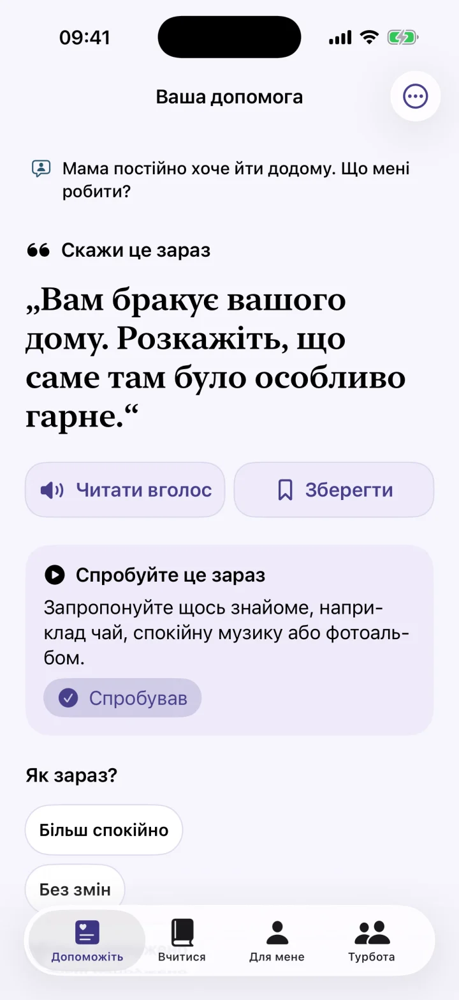
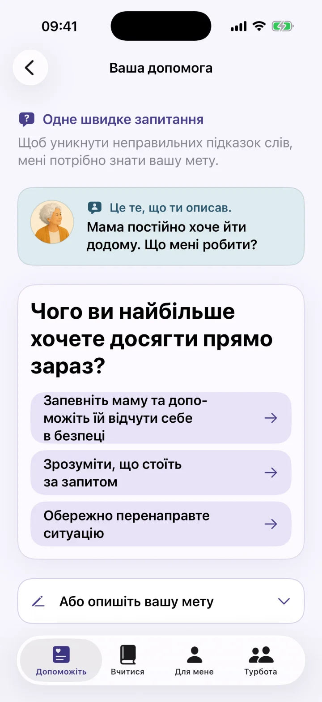
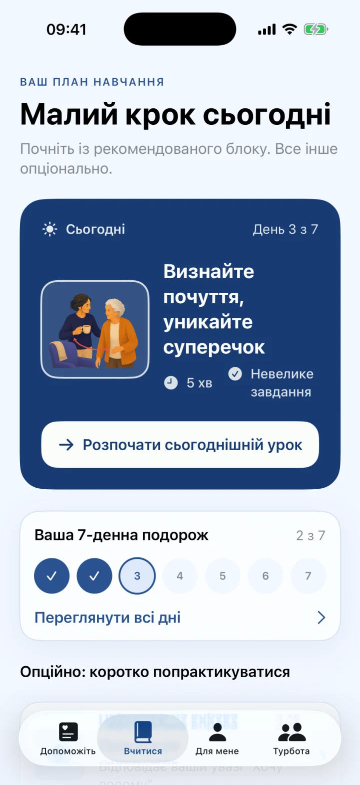
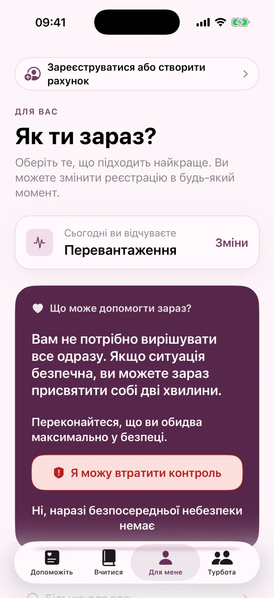

Негайна допомога, коли бракує слів
Коли ви не знаєте, що сказати, отримайте спокійну фразу, маленький наступний крок і чітку підказку для складних моментів із деменцією.
- Не є заміною медичної консультації або місцевих служб екстреної допомоги.

Негайна допомога
Вчитися
Догляд за собою
Негайна допомога та персональний 7-денний план для складних моментів деменції.
Коли ви не знаєте, що сказати, отримайте спокійну фразу, маленький наступний крок і чітку підказку для складних моментів із деменцією.



Фрази й наступні кроки
Dementia Coach підтримує членів родини, які доглядають за людиною з деменцією. Коротко опишіть ситуацію й отримайте можливу спокійну фразу, маленький наступний крок і зрозуміле пояснення.
- Швидка допомога в напружених ситуаціях
- Поширені моменти: повторні запитання, вечірній неспокій або особистий догляд
- Короткі уроки й особистий план на 7 днів
- Збережені фрази, голосове введення та озвучення
- Коротка перевірка стану опікуна
Не є заміною медичної консультації або місцевих служб екстреної допомоги.
Dementia Coach — інструмент для спілкування та повсякденної підтримки. Він не встановлює діагнозів і не замінює медичну, сестринську, психологічну чи екстрену допомогу. Поради AI та підготовлений вміст можуть бути неповними або невідповідними. Завжди оцінюйте їх з огляду на людину, ситуацію та професійні рекомендації.
Фрази й наступні кроки
Підтримка комунікації для сімейних доглядачів людей з деменцією.